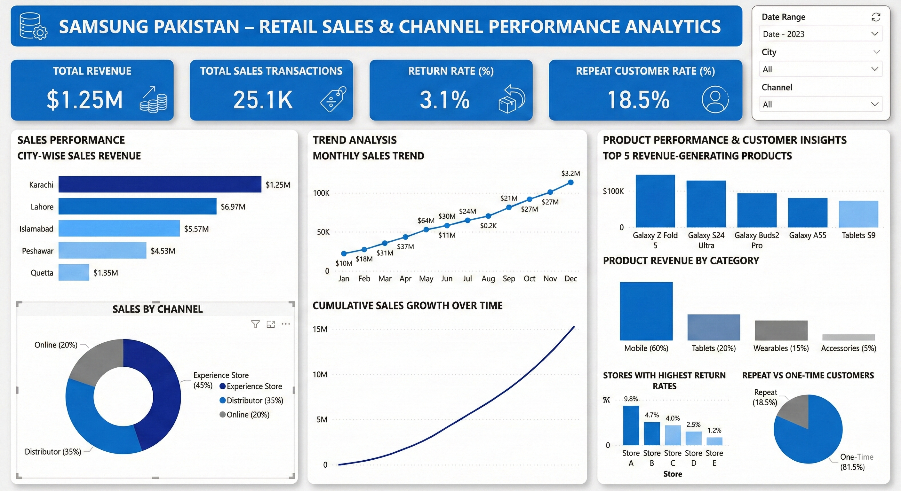

Samsung Pakistan Retail Sales Channel Performance
Evaluate Samsung Pakistan’s retail sales performance across cities, sales channels, products, categories, and customer behavior to identify revenue drivers, growth trends, and areas requiring improvement.
Built an interactive Power BI dashboard using KPIs, city-wise and monthly sales analysis, channel/product comparisons, cumulative growth, return rates, and repeat-customer metrics, with filters for date, city, and channel.
Karachi shows the highest city-level revenue, while the Experience Store contributes the largest channel share (45%). Mobile products dominate category revenue (60%), with Galaxy Z Fold 5 as the top revenue-generating product. The overall return rate is 3.1%, while repeat customers account for 18.5%, indicating an opportunity to improve customer retention and repeat purchases.